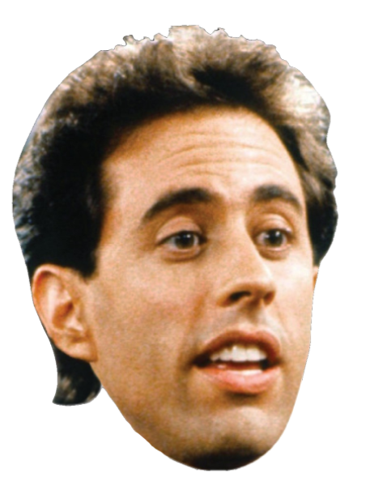
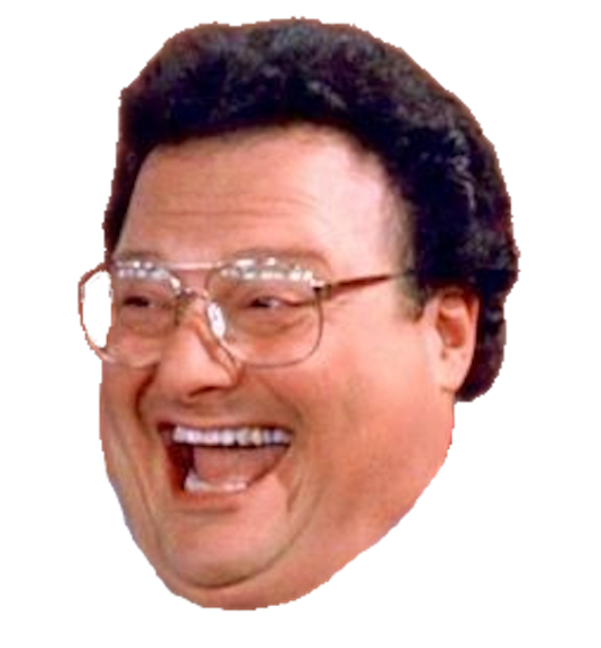

WELCOME TO SEINFELD VS NEWMAN!!
Tokens
Player 1:
Player 2:
Scoreboard
Player 1:
0
Player 2:
0
Player 1, are you a Seinfeld....or a
Newman
?


Player 2's symbol will default to the other option.
Don't worry, if you know how to play Tic Tac Toe, then you know how to play Seinfeld Tac Toe...
won!
Oh dear, it's a Cat's Game!
Play Again!